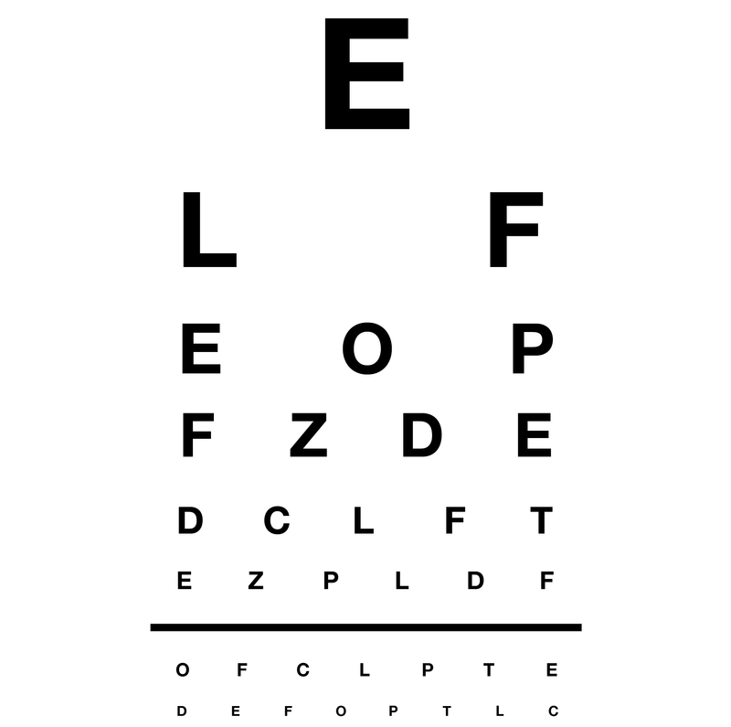

Distance Vision Test
Please follow the steps below to perform a distance vision check:
- Wear your glasses or contacts if you have any.
- Keep your device at a distance of 10 feet (3 meters) from your screen.
- Step 1: Cover your right eye and try to identify the letters in the image below using your left eye.
- Step 2: Now cover your left eye and repeat the test using your right eye.
- Ensure your room is well-lit and your screen is at eye level for the best results.

← Back